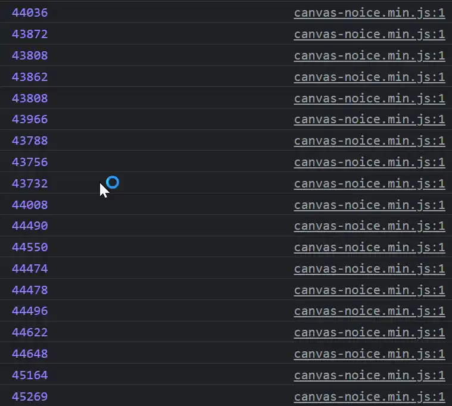
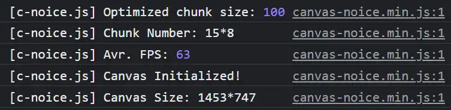
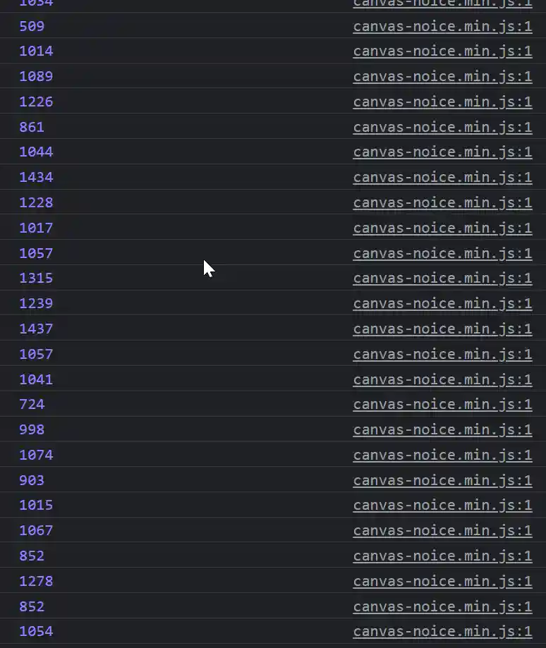

【更新】隆重介紹 canvas-noice.js
Last updated on March 3, 2023
Contents
更新
筆者在修好了幾個東西之後，將本套件重新整理並命名成 canvas-nice.js 作為正式版發布名稱。
主要修改原因，是因為 canvas-noice.js 可以自訂的參數量過多，且在已經做出足夠多優化後，必須要以輕量化面向。因此將類重力模擬、FPS Manager、等其他過於實驗性或是多餘的功能移除；但裝上數個以繪圖客製化為導向而非溢出性性能優化的參數設定。
以下文章以黃色區塊框起來的地方為一些小修改以及筆者對自己的吐槽 owo。
前言
耶，終於實作出來了！

正文
筆者很久以前就對 canvas-nest.js 有印象，看著這個動畫既紓壓又療癒 \^~^/。簡單來說，他就是一個輕量型（？）的網頁背景動畫，模擬數十至數百乃至一千出頭個點作隨機運動；兩點之間以線連接，形成一大型網狀結構，同時也可與游標互動。
有興趣者可以來這邊看 demo
在開始學了一些 html 之後開始寫些網頁時，才正式在網頁中使用了這個功能。
但這時就要講到這個套件的缺點。上述所謂 輕量型 是指對 檔案大小 來說（< 10KB）；但在效能方面它卻一點都不輕量。為什麼呢？
如果去翻翻看原始碼，就會發現作者直接用爆搜計算所有點之間的互動，而也沒有優化畫線的過程，造成整個程式非常吃效能，FPS 也不高。
計算量優化
在同樣設定下（1000 個點；互動半徑 77.46 像素；不模擬重力），canvas-nest 跑出來的成績只有 13.8 FPS，如下圖：

而在同樣設定下，使用筆者優化過後的演算法與資料型態建構出的新套件 canvas-noice.js，則是把 60 FPS 跑好跑滿。

為什麼會有如此巨大的差別？原因在於兩個重大的優化 - chunks 與 draw buffer。
在原套件中使用的遍歷算法是爆搜，時間複雜度是 $O(N^2)$，我們簡單算一下遍歷 1000 個點所需要的運算次數：
$$ \binom{1000}{2}=499500 $$
而 canvas-noice.js 利用 chunks 優化過後的遍歷量大約在 44500 上下浮動，運算量差了大約 11.22 倍。這也就是利用一些空間換取時間的古老手法 owo。
以筆者的測試環境來說，大概建了
120塊 chunks
筆者現在才發現因為不用模擬重力、遍歷的方向性又已經被決定了，所以可以從根本上減少試算的次數，現在在同樣設定下計算次數已經降到了大約 22000 次，優化了 22.7 倍計算量。


chunks 的實作流程
為什麼要實作 chunks？
因為原作者是把所有點都存在一個一維陣列中，而我們要計算哪些點在某個點的互動範圍內時，就只能幾乎全部都看過一遍。
如果把點存在二維陣列中，就只需要把點本身所在的格子與鄰近8個格子納入計算對象就好了。
如果我們將空間切成多個小小的正方形空間，稱為 chunks。每個 chunks 中可以有數個點，並先假設 chunks 的寬高至少比互動半徑還要大。
今天有一點 $p$ 在某個 chunk 中，我們想要計算它與哪些點有交互作用。那我們可以利用爆搜先算完它與它那格 chunk 中的所有點的交互作用，再計算它與周遭八個 chunks（上下左右與四個角）中點的交互作用。如此一來就完成了計算，不需要算完整個陣列的點。
實作上當然就是用最簡單的二維陣列實作 chunks；用 array 紀錄當中的點。
筆者原本想要用 linked-list，但越寫越多 bug，果斷放棄重投 array 的懷抱 owo
題外話：使用 chunks 後的時間複雜度難以估算，筆者算了一個晚上的數學建模後得出來的最簡單狀況下的時間複雜度可能是 $O(w\cdot h)$，$w,\ h$ 是每塊 chunks 的寬高。
這邊應該忘記乘上 $P$（點的數目）了，然後這個結果應該是在 $w,\ h$ 都跟 $r$（互動半徑）差不多時的複雜度。
所以可以把時間複雜度寫成
$$O(P\cdot r^2)$$
而空間複雜度就是
$$O(r^{-2})$$
但這仍然是簡單版模型推算出來的結果
改版之後之所以不用好像更好的空間分割資料結構 - 四元樹（QuadTree）是因為它非常不擅長應對動態的物件（像是跑來跑去的點），它比較擅長應對靜態物件 owo。
筆者在寫這篇文後有用其他人寫好的輕量化 quadtree module 寫了個 qt 的版本，但頂多只能跑到 800 個點之後，fps 就直直往下墬直接見底；就算順了 fps 也不太穩定，所以放棄了這個版本。
還是好好用 chunks 吧。
os: 把點全部放進去 qt + 全部查詢過一遍碰撞候選點 + 直接把 qt 丟掉 的代價真的太大惹啦 qq。
繪圖優化與實作流程
這個應該是最主要的優化了，原本 1000 個點只能跑 22 FPS 的 canvas-noice 在經過繪圖優化後直上 60 FPS。
據筆者爬文後獲得的結果，html canvas 中如果每畫一個點就調用一對 ctx.beginPath() ... ctx.stroke() 的話，將會使效能嚴重降低。
但因為 canvas-nest 在畫線時每次都有不同的屬性：strokeStyle 與 lineWidth，不得不每次都調用一對上述的程式碼，否則畫出來的線樣式會完全錯亂。
筆者自己在經過思考後，決定利用 draw buffer 解決這問題，以下是思考邏輯：
如果我們必需要在一對 ctx.beginPath() ... ctx.stroke() 中把所有有著同樣屬性的線一次畫完，那就先建立類似 map 的東西，將所有有著相同屬性的線都存起來一次畫，反正畫線先後順序根本沒有差。
正好，可以用參數 alpha 同時決定 storkeStyle 與 lineWidth，那代表我們只要以 alpha 作為 key 就好了。筆者在實作上將 alpha 做簡單的轉換後拿來當 array 的 index（總共可以分成 9 類），做出跟 map 一樣的效果。這個二維 array 就稱為 draw buffer。
實做這個東西後，大概降低了幾次上述程式碼對的呼叫呢？

從這張圖可以看出，在有 15 行的狀況下，每一行所需要畫的線總數大約落在 1000 條上下。也就是說，原本會呼叫到 1000 次的程式碼對，現在只會呼叫到至多 9 次，差不多是 111 倍的差距。
一幀差不多要畫 15000 條線，電腦你辛苦惹 owo。
現在的繪圖緩衝區對於線與圓的緩衝區大小都是 1000，再高也不會變比較好。
筆者猜是因為沒有 GPU 輔助的 canvas 繪圖效能可能真的已經到極限了，如果要再上去會需要到 webgl。
除了嘗試自己實作 webgl 外，可以用的套件有 pixi.js，但是光 rollup 就要 20 秒，api又難用，放棄。
還有一個比較友善的是寫好的 canvas2d to webgl 模組，可是那模組大小直接大於 50KB（筆者沒詳細算所有 dependencies 加起來到底有多大），顯然對輕量型模組非常不友善。如果筆者到時候有去玩 webgl 的話可能再發布一個有 webgl 加速的版本吧 owo。
吐槽++：現在的筆者已經試圖用過 jagenjo / Canvas2DtoWebGL 實作一個 webgl 加速版本了。但它api竟然沒有寫好 (氣)，畫點的功能出bug、線條粗細出 bug、一堆咚咚都一直出 bug，然後效能甚至變爛了，webgl 版本還是先算了吧 qq。
而也有另外一個優化可以大幅降低（筆者猜大概比一半少一點）要畫的線數目，那就是 chunk divergence。筆者會想出來這種優化方式是最近剛好在學散度與旋度。
如果我們在實作 chunks 後卻在計算時畫每條線，那每條線實質上都會是重疊的 2 條線，因為會重複計算兩次。
現在把畫一條線的過程想成一種 flow 從中心點流向其他與之連接的點，只畫一條線的最快方式就是讓其中一個點的散度變成 1；另一個變成 0。
這樣，flow 就會從散度高流向散度低的點；而不會逆流回去。但是要如何實作這種性質？我們可以將 chunks 想成黑白相間的西洋棋盤，其中黑色代表高散度；白色代表零散度。這樣的區域性性質會影響到其中的所有點，也就是說每個點的散度取決於它所在的格子是白色還是黑色的。
畫線時，我們可以先用聰明的爆搜保證同一格子中的兩點之間只會有一條線；而不同 chunks 之間的畫圖的判斷用以下 pseudocode 說明：
1 | |
也就是說：要不要畫線取決於點所在 chunk 本身的散度；或是當 chunk 本身與目標 chunk 有一樣的散度時才要畫線。
這樣一來，我們可以保證至少兩鄰近 chunk 之間的每一點只會畫一條線，但對角線的 chunks 還是會重複畫兩條線。
後者應該可以用 row & column 的方向性解決，但筆者還沒實作 OwO。
啊 現在實作完了。
之前的遍歷演算法有些錯誤點（這邊的散度設定其實也沒有必要），還是會算到重複的東西。其實只要學聰明的爆搜一樣決定遍歷的方向性就可以省去很多的檢查，只不過二維的狀況還是要設代表遍歷過的flag。
筆者在新版本中已經把遍歷算法修好，也把散度設定移除了。用好方向性之後在 1000 個點的狀況下大概減少了 2000 次要試算互動距離的計算量。
不過沒能用上散度的設定真是可惜 qwq。
FPS 自動偵測
除了主程式之外，筆者也拿了個網路上的小程式，客製化之後塞在程式碼中（fps_manager），會自動比對你的電腦在沒有跑 canvas-noice.js 時的平均 FPS 與跑了之後的效能差異。如果兩者差太多會自動減少目前螢幕上的點數量 \^~^/。
其實這東西蠻好的，只是拿掉變成輕量化之後，就要全部相信各位站長自己設定的參數不會讓訪客的電腦炸開，因為沒有fps檢查 owo。（像是什麼 3000 個點然後線超粗）
為什麼是取名 canvas-noice ?
因為是 canvas-nest.js 的優化版，自然就想要取個類似但有正面意義的名字，所以就想到了這張梗圖：

用梗圖拿來當正式版名稱顯然太不正經了，所以就換回來正常點的吧。owo
專案連結
這邊的連結都修改成正式版 canvas-nice.js 的了，documentation 也已經寫好了，詳情請見下方的 Github Repo 連結。
那個 NEW! 是想起來有這麼一個可以拿來 DEMO 的網站存在，所以就加上去了。
目前設定是 500 個點
之後會寫 documentation，但直接看
main.js&index.html中的東西或許還比較快 owo
後記
正式版的程式碼打包之後的大小是 8.65 KiB，總算是小一點了 owo。
最後寫下來程式碼打包時的大小是 10.52 KiB，比 canvas-nest.js 大了不少；但效能明顯提升就是爽 \^~^/。
筆者寫這段文時已經把主程式寫好了，前前後後找資料寫程式碼大概花了 24 小時左右，終於可以放鬆啦（灑花！
不過之後某時候想到一些東西如果可以優化的話會再繼續優化程式。
那就先醬 OwO ~